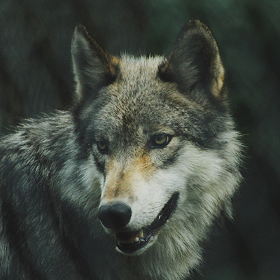

Animais Fantásticos
Clique na foto dos animais para saber mais


Leão
O leão é uma espécie de mamífero carnívoro do gênero Panthera e da família Felidae. A espécie é atualmente encontrada na África subsaariana e na Ásia, com uma única população remanescente em perigo, no Parque Nacional da Floresta de Gir, Gujarat, Índia.
A pelagem é unicolor de coloração castanha, e os machos apresentam uma juba característica. Uma das características mais marcantes da espécie é a presença de um tufo de pelos pretos na cauda, que também possui uma espora.
Habita preferencialmente as savanas e pastagens abertas, mas pode ser encontrado em regiões mais arbustivas.
A espécie está classificada como "vulnerável" pela União Internacional para a Conservação da Natureza e dos Recursos Naturais (IUCN), na Ásia, o leão está confinado a uma única área protegida e sua população é estável, mas está classificado como "em perigo", já que a população não passa de 350 animais.
Esquilo
Os esquilos pertencem a uma grande família de mamíferos roedores, de pequeno e médio porte, conhecida como Sciuridae.
Os esquilos estão espalhados por quase todo o mundo, a maioria nas zonas de climas temperado ou tropical, mas também em algumas zonas de clima frio. Como todos os roedores, possui presas fortíssimas, com que roem facilmente sementes, principalmente bolotas.
As sementes são as principais fontes de alimentação, mas também consomem insetos e frutas. Quando coletam alimento, enterram algumas sementes que encontram, sendo que algumas chegam a germinar, como pinhões e coquinhos, acabando por plantar árvores como araucária e jerivá.
Quando adulto, as maiores espécies da família chegam a medir de 53 a 73 cm de comprimento (com a cauda).
Urso
Os Ursos (latim científico: Ursidae) constituem uma família de mamíferos plantígrados, da ordem Carnivora, geralmente de grande porte, contendo os ursos e os pandas. Embora classificado como urso, e logo após, como procionídeo, junto com o panda-vermelho, o panda-gigante foi recolocado dentro da família dos ursídeos devido às novas pesquisas genéticas.
Algumas características comuns dos ursos são pelagem espessa, rabo curto, o olfato desenvolvido e as garras não retráteis. Os ursídeos são geralmente animais omnívoros.
As espécies mais antigas e primitivas desta família estão reunidas no gênero Ballusia, do Mioceno Inferior.
Os ursos existem em todos os continentes, em exceção na África, embora algumas fontes afirmem terem avistado o Urso nandi, mas sem comprovarem a sua existência.
Raposa
As raposas são animais mamíferos e onívoros pertencentes à família Canidae. São vulpídeos de porte médio, caracterizados por um focinho comprido e uma cauda longa e peluda.
Também apresentam como particularidade suas pupilas ovais, semelhantes às pupilas verticais dos felídeos.
De cerca de 40 espécies reconhecidas como raposas, somente 12 pertencem ao gênero Vulpes das "raposas verdadeiras", do qual a raposa vermelha é a mais comum.
Também apresentam como particularidade suas pupilas ovais, semelhantes às pupilas verticais dos felídeos.
As raposas são caçadoras oportunistas e apanham suas presas vivas. A técnica de caça mais comum, aprimorada desde a juventude, é pular sobre a presa para matá-la rapidamente.
Babuíno
Babuíno (do francês babouin) é a designação genérica para antropoides cercopitecídeos do gênero Papio e afins, caracterizados pelo focinho pontudo, caninos grandes, bochechas volumosas e calosidades nas nádegas.
É um animal semi-quadrúpede da ordem dos primatas que mede até 120 centímetros de comprimento.
Vive na África e seu habitat natural é nos campos abertos (savana, pastagens ou terrenos rochosos).
Ao contrário dos macacos, os babuínos passam a maior parte do tempo no chão. Suas caudas não são preênseis. Os babuínos são grandes lutadores e demonstram pouco medo de outros animais, inclusive seres humanos.
Lobo
Lobo (nome científico: Canis lupus) é uma espécie de mamífero canídeo do gênero Canis. É um sobrevivente da Era do Gelo, originário do Pleistoceno Superior, cerca de 300 mil anos atrás. É o maior membro remanescente selvagem da família canidae.
O peso e tamanho dos lobos variam muito em todo o mundo, tendendo a aumentar proporcionalmente com a latitude, como previsto pela teoria de Christian Bergmann.
Em geral, a altura, medida a partir dos ombros, varia de 60 a 95 centímetros. O peso varia geograficamente. Em média, os lobos europeus pesam 38,5 kg.
Também apresentam como particularidade suas pupilas ovais, semelhantes às pupilas verticais dos felídeos.
Números
FAQ
- Qual a longevidade destes animais?
-
Em liberdade, os leões podem viver até 16 anos.
Os esquilos podem viver de 15 à 18 anos.
A média de vida dos ursos são de 20 anos.
As raposas selvagens podem viver de 10 até 15 anos.
Os babuínos vivem de 35 a 45 anos.
A média de vida dos lobos é de 6 à 8 anos. - Qual o habitat desses animais?
-
A maior parte dos leões que hoje vive na natureza são encontrados nas savanas da África e demais regiões semi-desérticas. Ele já foi extinto de muitas áreas de florestas da Ásia e Europa.
Os esquilos vivem em todos os continentes, exceto na Antártica e na Oceania. Esquilos arborícolas fazem suas casas nas árvores. Esquilos do solo vivem em buracos sob as pradarias, nos desertos e nos campos.
O habitat dos ursos inclui a vegetação alpina (nos Alpes, Pirenéus e Balcãs), floresta temperada e a floresta de coníferas ou taiga (no norte da Europa, montanhas e outras áreas).
As raposas são encontradas em hábitats diversos, geralmente em tocas, evitando apenas os desertos e as florestas muito densas.
Os babuínos vivem principalmente na África e em algumas regiões da Ásia. Normalmente, habitam em regiões planas de savana, desertos e planícies rochosas.
Os lobos se desenvolveram em diversos ambientes, como florestas temperadas, desertos, montanhas, tundras, taigas, campos e até mesmo em algumas áreas urbanas. - Quais problemas os homens causam para os animais selvagens?
-
- - Aumento da fronteira agrícola;
- - Crescimento sem planejamento das cidades;
- - Utilização indiscriminada de saneantes domissanitários;
- - Produção de resíduos, sinantropização de espécies de animais selvagens;
- - Impacto sobre as populações de predadores;
- - Sobrevivência de animais generalistas (aumenta quantidade de itens alimentares);
- - Diminuição de competidores (queda da biodiversidade);
- - Atividade mineradoras;
- - Desmatamento
- - Queimadas;
- - Contaminação eletromagnética e de hormoniomimeticos;
- - Descarte de lixo em locais inapropriados;
- - Colonização humana em várias regiões do mundo;
- - Enfermidades humanas.
- Como posso ajudar os animais selvagens?
-
- - Seja um voluntário!
- - Ajude reciclando o que você produz;
- - Visite zoologicos, aquários, parques nacionais e refúgios de vida selvagem;
- - Denuncie todo e qualquer comércio de animais que você ver;
- - Não compre produtos que são feitos com animais ameaçados de extinção;
- - Plante árvores e recupere habitats;
- - Divulgue as informações acima;
- - Doe para a nossa instituição com a finalidade de manter ativa a nossa operação.


- 


Contato
- Rua Alexandre Ramos, Nº 400
- Rio de Janeiro - RJ
- +55 (21) 3297-8777
- contato@animaisfantasticos.com.br
- Seg à Sex das 8h às 18h
- Doe 0 BitCoin para nos ajudar